Los Campeones
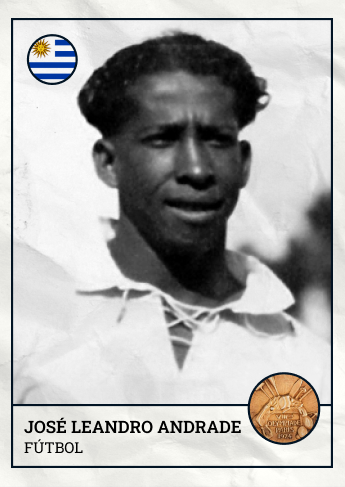 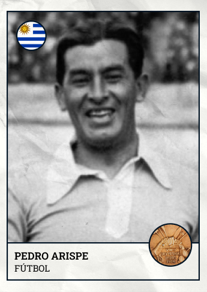 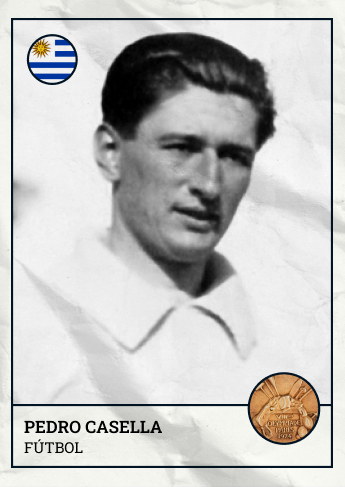 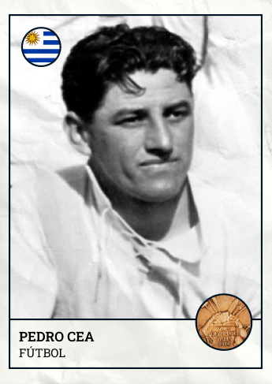 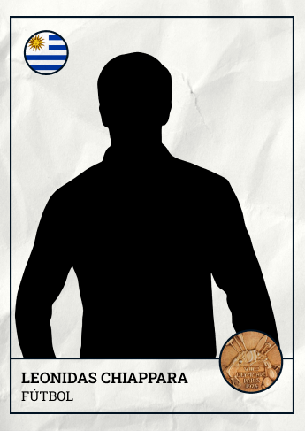 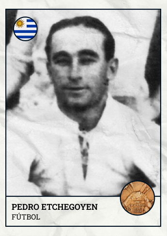 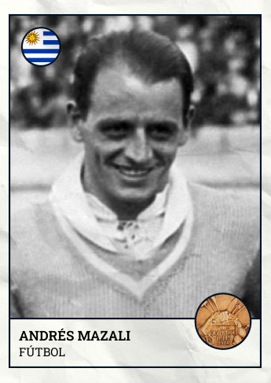
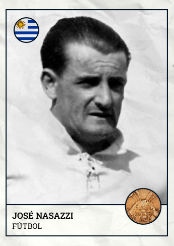
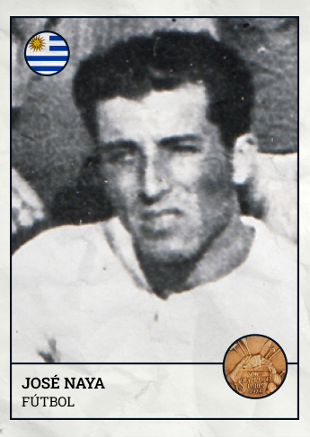
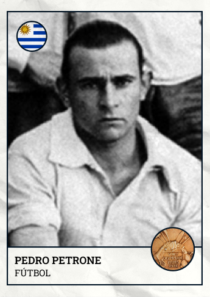
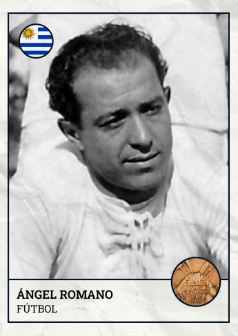
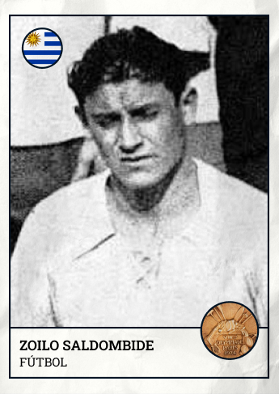
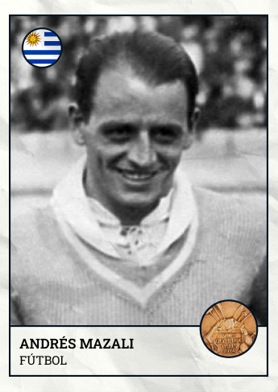
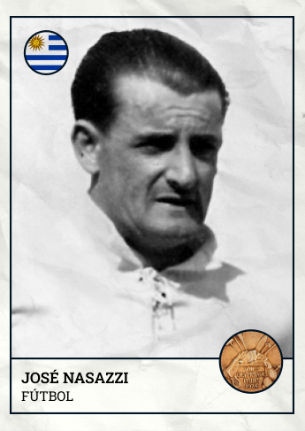
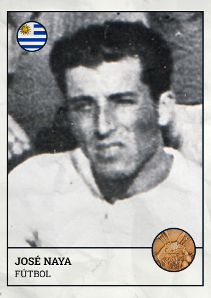
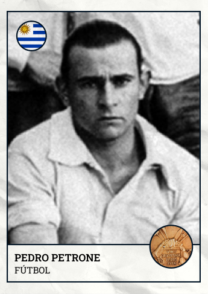
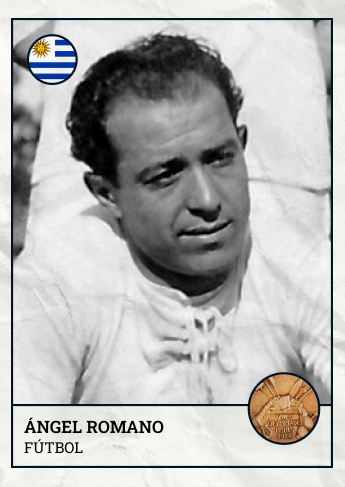
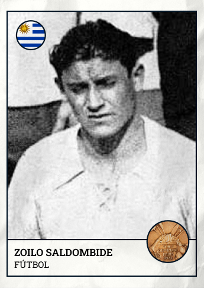
 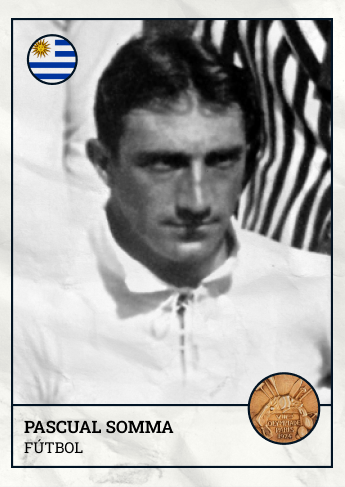
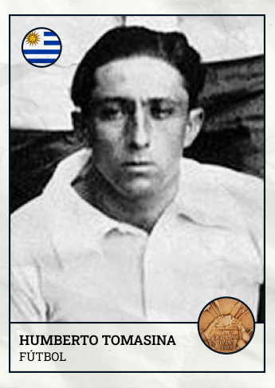
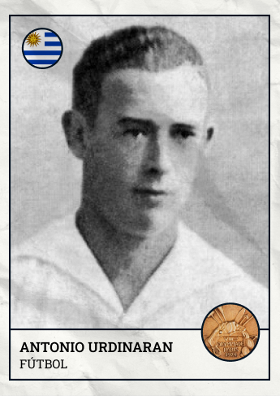
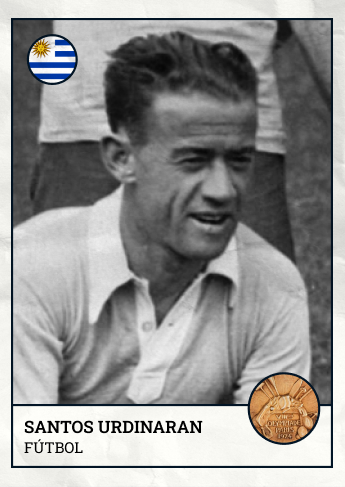
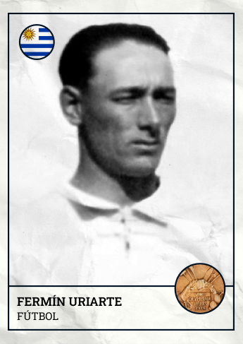
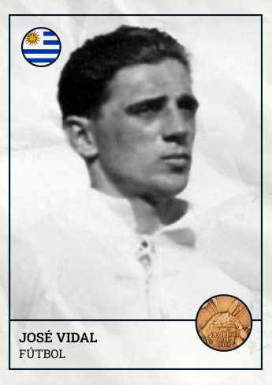
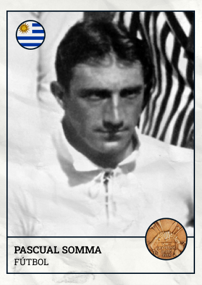
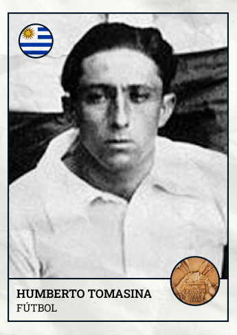
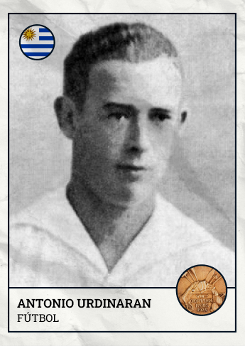
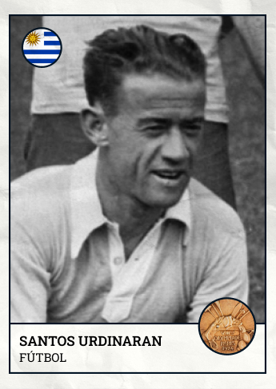
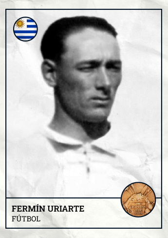
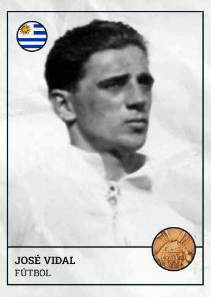
 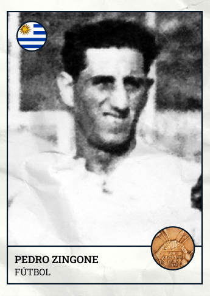
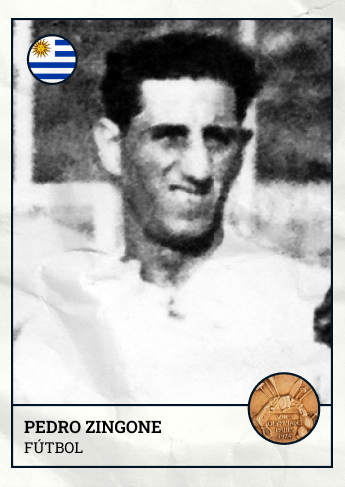
Este año se conmemora el centenario de la primera estrella celeste; estos son los 22 campeones que pusieron al país en boca del mundo.
En 1924, la selección uruguaya de fútbol marcó un hito histórico al conquistar su primera estrella en los Juegos Olímpicos de París, convirtiéndose en el primer equipo sudamericano en ganar un torneo internacional de esta magnitud. Con un juego que deslumbró a Europa, Uruguay presentó un estilo de fútbol técnico, veloz y estratégico, que rompió con el juego físico dominante en la época. Esta victoria no solo elevó al país en el panorama mundial del deporte, sino que también estableció las bases de la rica tradición futbolística uruguaya, dando inicio a la leyenda de la "Garra Charrúa".
La narrativa de este sitio web te invita a revivir la magia de aquel histórico 13 de julio de 1930, cuando Uruguay conquistó su primera estrella en el fútbol mundial. Cada sección está diseñada para sumergirte en los momentos clave, desde la preparación del equipo hasta el emocionante pitazo final, conectando la pasión y el orgullo que marcaron para siempre la historia del deporte celeste.
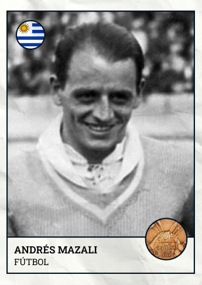
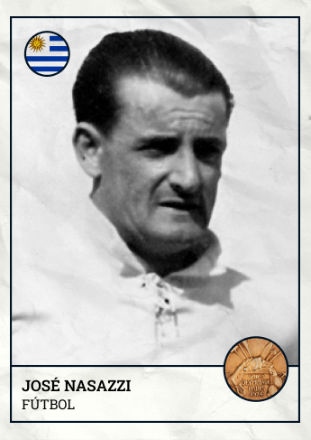
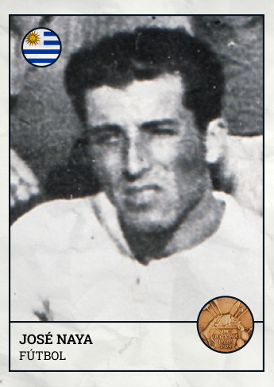
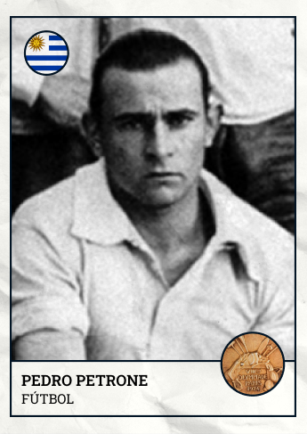
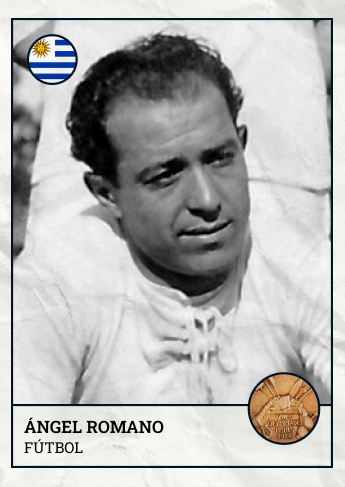
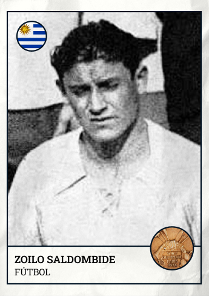
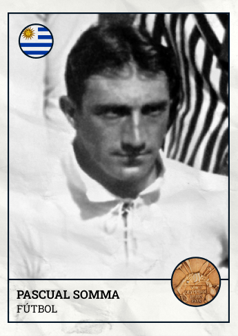
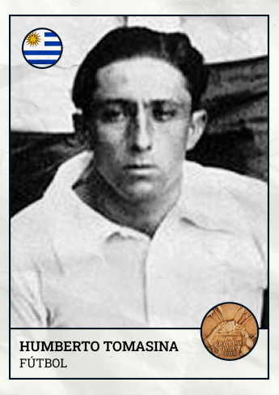
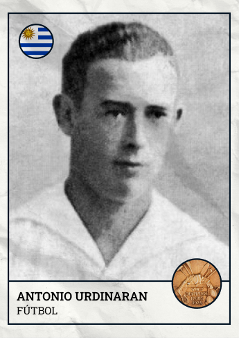
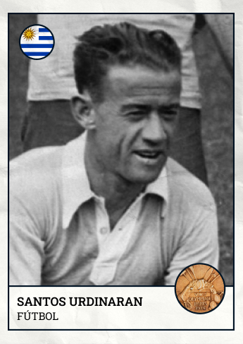
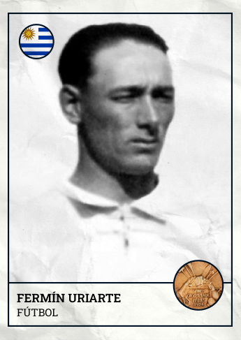
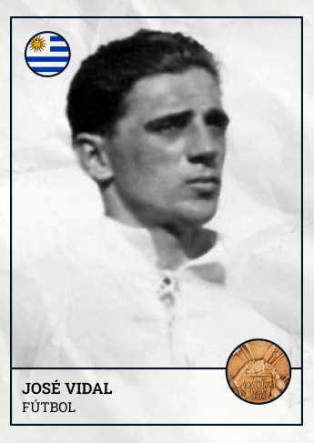
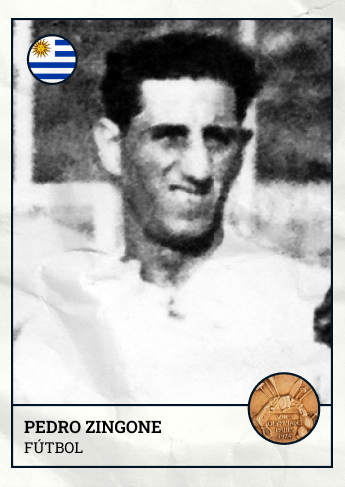
La narrativa de este sitio web te invita a revivir la magia de aquel histórico 13 de julio de 1930, cuando Uruguay conquistó su primera estrella en el fútbol mundial. Cada sección está diseñada para sumergirte en los momentos clave, desde la preparación del equipo hasta el emocionante pitazo final, conectando la pasión y el orgullo que marcaron para siempre la historia del deporte celeste.
Descripción de video
La narrativa de este sitio web te invita a revivir la magia de aquel histórico 13 de julio de 1930, cuando Uruguay conquistó su primera estrella en el fútbol mundial. Cada sección está diseñada para sumergirte en los momentos clave, desde la preparación del equipo hasta el emocionante pitazo final, conectando la pasión y el orgullo que marcaron para siempre la historia del deporte celeste.
La narrativa de este sitio web te invita a revivir la magia de aquel histórico 13 de julio de 1930, cuando Uruguay conquistó su primera estrella en el fútbol mundial. Cada sección está diseñada para sumergirte en los momentos clave, desde la preparación del equipo hasta el emocionante pitazo final, conectando la pasión y el orgullo que marcaron para siempre la historia del deporte celeste.
La narrativa de este sitio web te invita a revivir la magia de aquel histórico 13 de julio de 1930, cuando Uruguay conquistó su primera estrella en el fútbol mundial. Cada sección está diseñada para sumergirte en los momentos clave, desde la preparación del equipo hasta el emocionante pitazo final, conectando la pasión y el orgullo que marcaron para siempre la historia del deporte celeste.
Descripción de documental